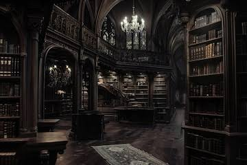
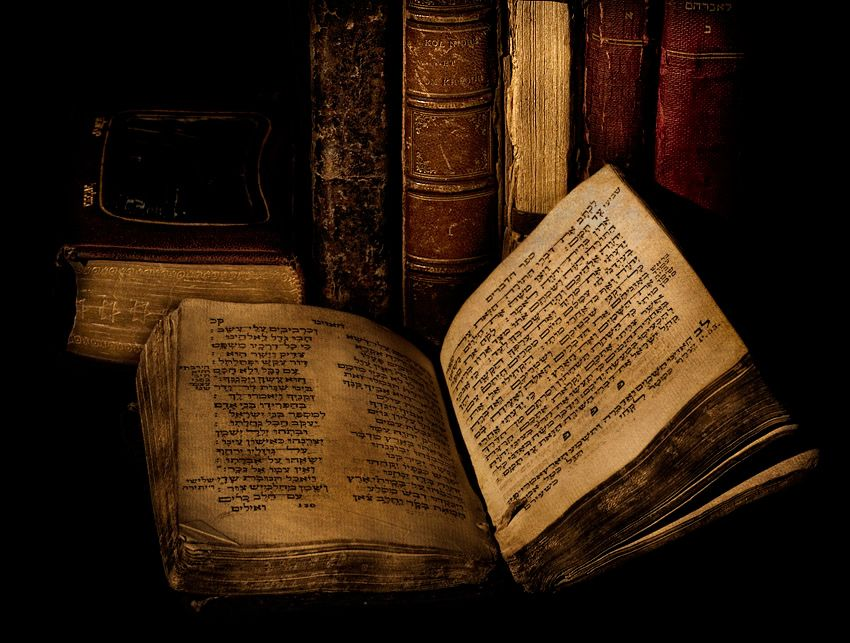
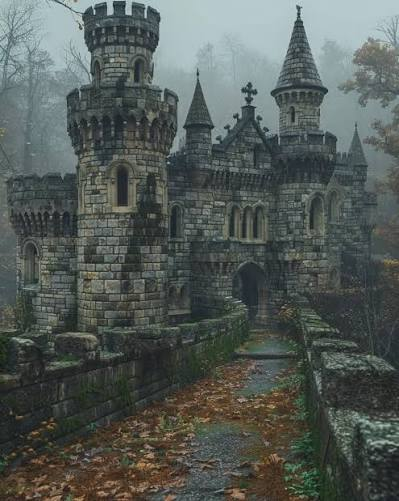

🏛️ La biblioteca misteriosa

Entras en una antigua biblioteca del Museo de la Literatura.
Las estanterías están llenas de libros y el lugar está completamente vacío.
Mientras caminas entre los estantes, encuentras algo extraño.
Un libro antiguo está sobre una mesa.
📖 EL LIBRO MISTERIOSO

El libro parece muy antiguo y no tiene título en la portada.
Cuando lo abres, encuentras una frase escrita en la primera página:
Leer la frase
"Quien quiera conocer mi historia deberá seguir el camino que elija su imaginación."
De repente, una página comienza a brillar y aparecen dos caminos.
¿Qué decides hacer?
🌲 EL BOSQUE DE LAS HISTORIAS

Sigues un pequeño camino que aparece entre las páginas del libro y llegas a un bosque.
Los árboles están cubiertos de palabras y frases de diferentes historias.
Después de caminar un rato encuentras tres caminos.
📜 EL CAMINO DE LA CARTA
Encuentras una pequeña carta debajo de un árbol.
📜 Leer la carta
"Las mejores historias no siempre tienen un final escrito. A veces, el lector debe decidir cómo terminan."
Al terminar de leer, aparece una puerta entre los árboles.
🌊 EL CAMINO DEL RÍO
Llegas hasta un río que refleja las páginas del libro.
En el agua puedes ver diferentes escenas de historias literarias.
🔎 Mirar el agua
Ves personajes, castillos, aventuras y lugares que parecen pertenecer a diferentes libros.
Al otro lado del río aparece una salida.
🔙 REGRESASTE A LA BIBLIOTECA
Decides regresar antes de continuar la aventura.
El libro sigue abierto sobre la mesa.
🏰 EL CASTILLO DE LAS HISTORIAS

Sigues el segundo camino y llegas frente a un enorme castillo.
Sobre la puerta hay una inscripción:
🔎 Leer la inscripción
"Solo quien conozca el poder de las historias podrá entrar."
La puerta se abre y encuentras dos caminos.
📚 LA BIBLIOTECA DEL CASTILLO
Dentro del castillo encuentras una biblioteca enorme.
Hay miles de libros, pero uno llama especialmente tu atención.
Abrir el libro
El libro contiene una historia sobre una persona que descubre que puede cambiar el final de cualquier relato.
Al terminar de leerlo, descubres una puerta escondida detrás de una estantería.
🗼 LA TORRE
Subes por una escalera hasta llegar a la parte más alta del castillo.
Desde allí puedes ver todo el mundo creado por el libro.
Mirar desde la torre
Ves la biblioteca, el bosque y el castillo conectados como si fueran partes de una misma historia.
Encuentras una puerta que parece llevar fuera del libro.
🏆 FINAL BUENO 🏆
Consigues cruzar el río y encuentras una puerta iluminada.
Al abrirla, vuelves a la biblioteca del museo.
El libro misterioso se cierra lentamente frente a ti.
Has completado la aventura.
Descubriste que cada camino podía llevarte a una parte diferente de la historia.
📚 ¡Felicidades, explorador literario!
📖 FINAL LITERARIO 📖
La puerta te lleva a una habitación llena de libros.
En el centro hay una mesa con una pluma y una hoja en blanco.
Una frase aparece lentamente sobre la hoja:
"Ahora la siguiente historia puede ser escrita por ti."
Comprendes que el verdadero propósito del libro era demostrar que cada lector puede imaginar su propia historia.
Has encontrado el final literario.
👻 FINAL MISTERIOSO 👻
Abres la puerta de la torre y apareces nuevamente en la biblioteca.
Todo parece normal.
Pero cuando miras la mesa, el libro ya no está.
En su lugar encuentras una pequeña nota:
📜 Leer la nota
"Algunas historias terminan cuando el lector deja de buscarlas."
Nunca sabrás qué ocurrió realmente con el libro.
Has encontrado el final misterioso.